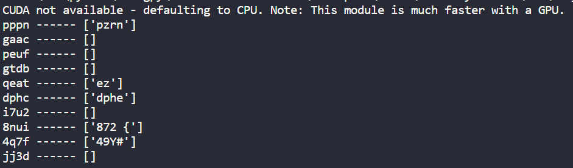
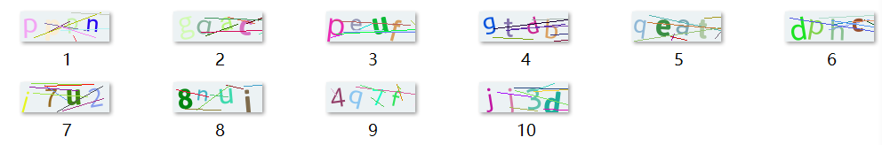
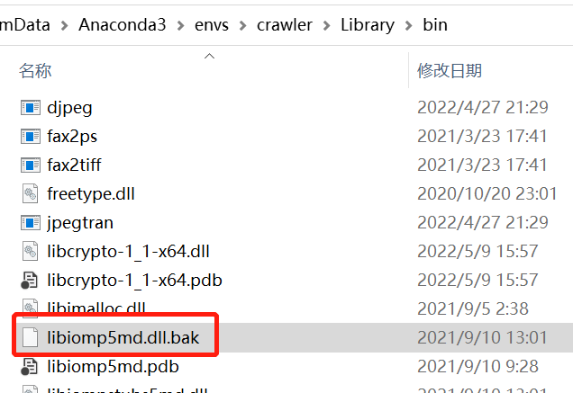
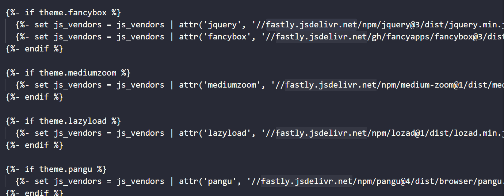

Preface
最近在改爬虫的bug。
今天先是搞定了 cookie_jar 不生效的问题，
接下来的问题就包括了图片验证码的识别，
所以要用到ocr。
OCR Optical Character Recognition
Contents
选型
Gayhub 上搜索 ocr，然后编程语言过限定 Python。
排名第一的飞桨的OCR，还要训练，因为电脑不好，也是因为懒，所以排除了；
排名第三的是一个叫做EasyOCR的东西，叫Easy的一般都很容易吧，搞起。
整起
仔细阅读Readme，第一步安装，然后note，需要pytorch，我了个去。
来都来了，去找别的也麻烦，就这个吧，选择困难综合症的最有效良药就是：来都来了，将就一下吧
安装pytorch与torchvision
依照pytorch官网的指引，下载了cuda支持windows和使用gpu的版本。
选完就后悔了，我的垃圾显卡，选GPU不是多余么？
但是，来都来的….
1 | conda install pytorch torchvision torchaudio cudatoolkit=11.3 -c pytorch |
等待过程是漫长的，因为
- cudatoolkit 545MB
- pytorch 1.23GB
还HTTP error了
安装EasyOCR
1 | conda search easyocr |
找不到，
1 | conda search ocr |
也找不到，也就是这个没有发布到anaconda上，还是老老实实的用pip安装吧。
在pytorch还在下载的时候，顺便开下命令行，下载easyocr.
1 | conda activate crawler |
Code & Result
1 | import easyocr |
结果输出如下：


看起来结果偏差还是很大的，后续研究一下有没有什么可以优化的地方以得到想要的结果。
Problems
#15: Initializing libiomp5md.dll, but found libiomp5md.dll already initialized
OMP: Error #15: Initializing libiomp5md.dll, but found libiomp5md.dll already initialized.
OMP: Hint This means that multiple copies of the OpenMP runtime have been linked into the program. That is dangerous, since it can degrade performance or cause incorrect results. The best thing to do is to ensure that only a single OpenMP runtime is linked into the process, e.g. by avoiding static linking of the OpenMP runtime in any library. As an unsafe, unsupported, undocumented workaround you can set the environment variable KMP_DUPLICATE_LIB_OK=TRUE to allow the program to continue to execute, but that may cause crashes or silently produce incorrect results. For more information, please see http://www.intel.com/software/products/support/.libiomp5md.dll重复了。
上面提醒的是重复可能会影响性能或者导致错误的结果。
1 | import os |
在代码中加入以上代码已允许重复。
但是运行的时候还是报这个错。
去对应的conda env 中搜索此库。
搜索到了2个，一个位于 anaconda3/envs/crawler/Lib/site-packages/**下面,
另一个位于 anaconda3/envs/crawler/Library/bin下面，将这个库的加上一个随便的后缀 .bak 以让它失效。

hexo jsdelivr 加载不到的问题
写此文的时候，hexo 加载不了 cdn.jsdelivr 上托管的 js 库， 搜索后发现此域名已经改为托管到 cloudflare 下了。
需要将域名替换为 fastly.jsdelivr.net 就可以了。
需要替换的文件为 themes/hexo-theme-next/layout/_script/vendors.swig,如下：
